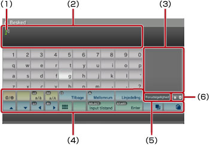
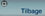
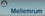
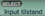
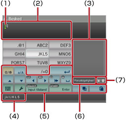
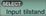

Om XMB™ > Brug af tastaturet
Brug af tastaturet
Tastaturet vises automatisk, når der skal indtastes tekst. Instruktionerne nedenfor er baseret på et engelsk tastatur. Yderligere oplysninger om brug af tastaturer for andre sprog findes i brugervejledningen for det respektive sprog.

(1) |
Markør |
|---|---|
(2) |
Tekstindtastningsfelt |
(3) |
Viser prædikativ tekst |
(4) |
Betjeningstaster |
(5) |
Viser, at prædikativ tekst er slået til. |
(6) |
Viser inputtilstand |
Oversigt over taster
Tilgængelige taster afhænger af inputtilstand og andre forhold.
 |
Vælg denne tast for at indsætte et symbol eller emoticon. |
|---|---|
 |
Vælg en af disse taster for at skifte mellem store og små bogstaver. |
| Vælg en af disse taster for at flytte markøren. | |
 |
Vælg denne tast for at slette det tegn, der står til venstre for markøren. |
 |
Vælg denne tast for at indsætte et mellemrum. |
| Vælg denne tast for at indsætte et linjeskift. | |
 |
Kopier eller indsæt tekst |
 |
Vælg denne tast for at få vist et minitastatur. |
 |
Vælg denne tast for at skifte inputtilstand. |
 |
Vælg denne tast for at bekræfte skrevne tegn. Tasten bruges også til at lukke tastaturet. |
Indtastning af tegn
Med prædikativ tekst kan du indtaste de første bogstaver af et ord, hvorefter du får vist en liste over almindelige ord, der starter med de pågældende bogstaver. Du kan derefter vælge det ønskede ord med piletasterne. Når du er færdig med at indtaste tekst, skal du vælge "Enter" for at lukke tastaturet.
Tips
- Ikke alle inputtilstande understøtter brug af emoticons.
- Sprogene, du kan bruge til tekstindtastning, er de understøttede systemsprog. Hvis systemsproget f.eks. er indstillet til fransk, kan du indtaste tekst på fransk. Systemsproget kan angives under
 (Indstillinger) >
(Indstillinger) >  (Systemindstillinger) > [Systemsprog].
(Systemindstillinger) > [Systemsprog]. - Du kan rydde hele tekstfeltet ved at trykke
 og L1-tasten ned samtidig.
og L1-tasten ned samtidig.
Brug af et tilsluttet tastatur
Du kan indtaste tekst med et USB-tastatur eller et Bluetooth®-kompatibelt tastatur (begge sælges separat). Du kan bruge det tilsluttede tastatur ved at trykke på en vilkårlig tast på tastaturet, når skærmen til tekstindtastning vises.
Tips
- Yderligere oplysninger om tilslutning af et Bluetooth®-kompatibelt tastatur findes under (Indstillinger) >
 (Tilbehørsindstillinger) > [Administrer Bluetooth® enheder] i denne vejledning.
(Tilbehørsindstillinger) > [Administrer Bluetooth® enheder] i denne vejledning. - Et tilsluttet tastatur understøtter ikke brug af prædikativ tekst.
- Du kan indsætte et linjeskift i tekstfeltet ved at trykke på ALT og ENTER. Du kan kun indsætte et linjeskift, når dette er muligt, for eksempel når du skriver en besked i kategorien
 (Venner).
(Venner). - Du kan rydde hele tekstfeltet ved at trykke SHIFT og BACKSPACE ned samtidig.
- Du kan indsætte kopieret tekst ved at trykke på Ctrl + V. Den sidst kopierede tekst indsættes.
Brug af minitastaturet
Hvis du vælger på det store tastatur, ændres det til et minitastatur. På minitastaturet er flere tegn knyttet til en enkelt tast.

(1) |
Markør |
|---|---|
(2) |
Tekstindtastningsfelt |
(3) |
Viser prædikativ tekst |
(4) |
Viser de tegn, der kan indtastes med den valgte tast. |
(5) |
Betjeningstaster |
(6) |
Viser, at prædikativ tekst er slået til. |
(7) |
Viser inputtilstand |
 -tasten, ændres det tegn, der kan indtastes. Hvis du f.eks. vil indtaste et [L], skal du vælge
-tasten, ændres det tegn, der kan indtastes. Hvis du f.eks. vil indtaste et [L], skal du vælge  og trykke seks gange på
og trykke seks gange på  til at flytte markøren til positionen efter [L]. Du skal derefter vælge
til at flytte markøren til positionen efter [L]. Du skal derefter vælge Tip
Du kan også indtaste tekst med et enkelt tryk. Brug tasten "Valgmuligheder" til at skifte tekstindtastningsmetode. Når du indtaster tekst med et enkelt tryk, vises ord, der kan oprettes på baggrund af en given bogstavkombination (eller talkombination) for de valgte taster som prædikativ tekst. Hvis du f.eks. vælger "DEF3"-tasten, vises ord, der starter med d, e, f eller 3 i vinduet for prædikativ tekst til højre på skærmtastaturet. Hvis symbolet ">" vises, skal du blive ved med at indtaste bogstaver, indtil der vises forslag i vinduet for prædikativ tekst.
Oversigt over taster
Tilgængelige taster afhænger af inputtilstand og andre forhold.
 |
Vælg denne tast for at indsætte et symbol. |
|---|---|
 |
Vælg denne tast for at skifte mellem store og små bogstaver. |
 |
Vælg denne tast for at indsætte et linjeskift. |
| Vælg en af disse taster for at flytte markøren. | |
 |
Vælg denne tast for at slette det tegn, der står til venstre for markøren. |
 |
Vælg denne tast for at indsætte et mellemrum. |
|
Kopier eller indsæt tekst |
 |
Vælg denne tast for at få vist tastaturet i fuld størrelse. |
 |
Vælg denne tast for at få vist indstillingsmenuen. |
 |
Vælg denne tast for at skifte inputtilstand. |
 |
Vælg denne tast for at bekræfte skrevne tegn. Tasten bruges også til at lukke tastaturet. |